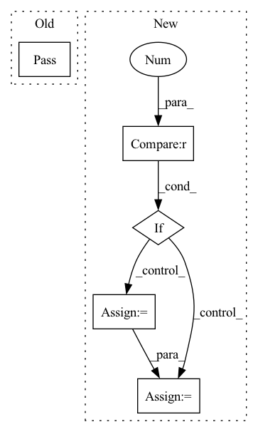

Pattern ID :1569
Before Change
Args:
x (torch.Tensor):
pass
After Change
A batch of output feature vectors.
// check input tensors
if x.ndim != 2 :
raise ValueError(f"Expected a 2D tensor. Got {x.ndim}-D tensor.")
if x.shape[-1] != self.in_dim:
raise ValueError(f"Expected {self.in_dim}-D position vector. Got {x.shape[-1]}.")
out = self.relu_actvn(self.fc_in(x))
out = self.relu_actvn(self.fc_1(out))
out = self.relu_actvn(self.fc_2(out))
out = self.fc_out(out)
return out
In pattern: SUPERPATTERN
Frequency: 3
Non-data size: 5
Instances Fragment ID: 4445767
Project Name: dvelopery0115/torch-nerf
Commit Name: bb350d76461be52a2ba9703bd1399e837d80e939
Time: 2022-07-09
Author: dreamy1534@kaist.ac.kr
File Name: torch_nerf/src/network/instant_ngp.py
M Class Name: InstantNGPMLP
N Class Name: InstantNGPMLP
M Method Name: forward(2)
N Method Name: forward(2)
M Parent Class: nn.Module
N Parent Class: nn.Module
M File Name: torch_nerf/src/network/instant_ngp.py
N File Name: torch_nerf/src/network/instant_ngp.py
M Start Line: 59
M End Line: 59
N Start Line: 98
N End Line: 108
Before Change
@abstractmethod
def forward(self, *inputs: torch.Tensor) -> torch.Tensor:
pass
@abstractmethod
def loss_function(self, *inputs: Any, **kwargs) -> torch.Tensor:
passAfter Change
**kwargs) -> Dict[Union[ChannelEnum, str], torch.Tensor]:
input, norm_consts = self.assemble_input(data)
if self.num_samples > 1 :
samples = []
for i in range(self.num_samples):
samples.append(self.forward_pass(input=input, data=data))
mean = torch.mean(torch.stack(samples), dim=0)
var = torch.var(torch.stack(samples), dim=0)
output = {ChannelEnum.RECONSTRUCTED_ELEVATION_MAP: mean,
ChannelEnum.MODEL_UNCERTAINTY_MAP: var} Fragment ID: 4445764
Project Name: mstoelzle/solving-occlusion
Commit Name: 0845934f79262774ac310af9512f495ff8deba9f
Time: 2020-12-09
Author: maximilian@stoelzle.ch
File Name: src/learning/models/base_model.py
M Class Name: BaseModel
N Class Name: BaseModel
M Method Name: forward(2)
N Method Name: forward(1)
M Parent Class: ABC,nn.Module
N Parent Class: ABC,nn.Module
M File Name: src/learning/models/base_model.py
N File Name: src/learning/models/base_model.py
M Start Line: 38
M End Line: 39
N Start Line: 39
N End Line: 61
Before Change
pass
def forward(self, x):
pass
After Change
return sequence
def forward(self, input):
if self.num_D == 1 :
return self.model(input)
result = []
down = input
for i in range(self.num_D):
model = getattr(self, "model_%d" % i)
result.append(model(down))
if i != self.num_D - 1:
down = self.down(down)
return result Fragment ID: 4445740
Project Name: lotayou/cocosnet
Commit Name: 3dcf714c258ea399239d1362db5247110f254fd7
Time: 2020-05-24
Author: lotayou@pku.edu.cn
File Name: model/discriminator.py
M Class Name: Discriminator
N Class Name: Discriminator
M Method Name: forward(2)
N Method Name: forward(2)
M Parent Class: nn.Module
N Parent Class: nn.Module
M File Name: model/discriminator.py
N File Name: model/discriminator.py
M Start Line: 12
M End Line: 12
N Start Line: 61
N End Line: 71